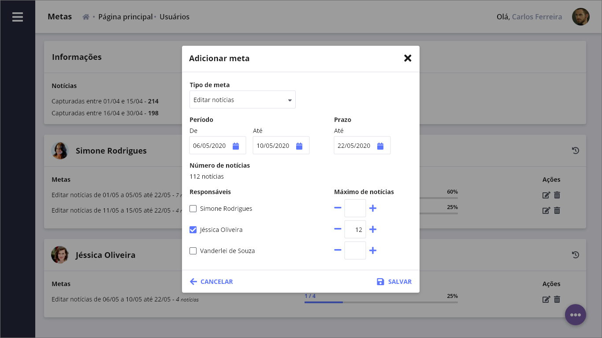
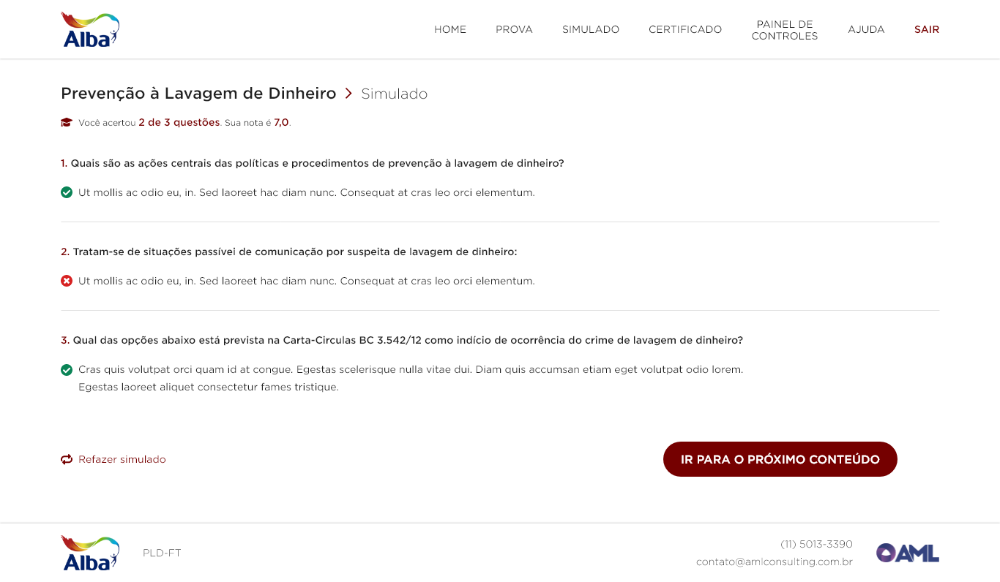
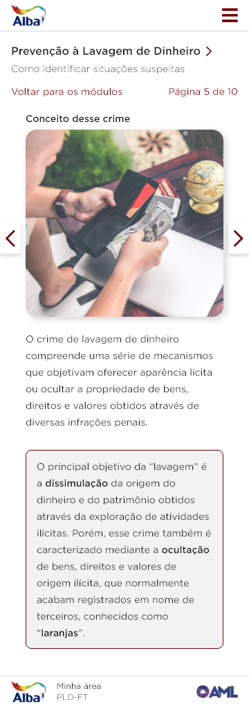

AML Consulting is a company focused on preventing and combating money laundering, analyzing financial transactions and reporting suspects to the responsible agency.
In between, we must take care of all the business infrastructure that underpins money laundering prevention systems and analysts.
Therefore, in working with AML, the tasks contained herein were divided into 3 projects: its news catching system, its e-learning platform, its compliance analysis system, the company website and its communications, and its CRM.
AML's News Catching
After defining the objectives of the system with stakeholders, we start the design process with the design system.
Initially, users are presented with a dashboard with most of the information relevant to system management.
In this screen we have the concept display behind a function that automatically captures news from the largest related sites, deliver them to the system, allowing us to have a manual check on the relevance of each.

Once selected, the news is available to add details for the editors of the team.
Some features offer greater control to users through well-built forms and adapted to meet all the needs of each part of the flow.
Tracking functions have been added to motivate and gamify users to perform tasks.

AML's E-learning Platform
AML has an e-learning platform to assist with internal and external training on preventing money laundering. We built a desktop and a mobile version.
Below we have some navigation images of the system, including details of content with images and video.
Here are the details of how the tests work.

Also, mobile screens.

AML's Compliance Analysis
Complying with all compliance processes related to government regulations becomes increasingly complicated according to the size of the company.
To solve this problem, the compliance analysis system seeks to help directors and managers have a general view of the processes.
Starting with the wireframes of the system, a dashboard showing the main graphics on compliance with regulations.
Below is a page entering one of the options, accessing any of the system sections.
Above, a complete wireframe with the details of marking what is being accomplished by the company.
Here we have the proposed design system for what is codenamed Ecosystem.
AML's website and its communications
This is the current version - at the time of building this project - of the AML Consulting homepage, required to have a variety of selling appearance of a product with the display of news relevant to the area of money laundering prevention.

Considering AML Consulting's need to have news as a focal part of its site, it was necessary to build a blog page, whether for news or opinion pieces.
Following this line, we needed a section for customer contact with the company.

A retrospective of the news of 2018 was also requested.
As well as the design and implementation of a newsletter.
AML's CRM

AML Consulting internal CRM login screen

In the CRM dashboard wireframe, the screen to which the user is redirected as soon as they log in, we have shortcuts to all major areas of the system.
As well as some notes (in Portuguese) about how the search field works with real-time suggestion and about two-layered level cards.
A listing of members who are subscribed to an event, along with multi-step process progress information, where all key information is displayed at once.
In the note we have that secondary actions on the person, such as editing and deleting, are accessible by clicking on the corresponding line.

We also have a standard form screen displaying various possible types of data entry.
Below is an example of the system Image Bank, seeking to display a preview of the image, as well as title information and date of insertion into the system.
It also offers some basic and quick actions, such as copying the image link, editing information about it, and deleting it from the Image Bank.